Тайны бумажных денег : Устюрт и другие чудеса Казахстана

В 2006 г. Национальный банк Казахстана в очередной раз заставил сердца коллекционеров-бонистов биться немного чаще. В обращение была запущена серия банкнот, которая не только имеет самую высокую степень защиты от подделок на сегодняшний день, но и демонстрирует замечательное художественное оформление. Вполне может статься, что здесь мы имеем дело с интереснейшей банкнотной серией последнего десятилетия.
На всех до единой современных купюрах Республики Казахстан имеются крохотные изображения петроглифов — высеченные на скалах (камнях) доисторические рисунки. В основу этих банкнотных изображений легли петроглифы из урочищ Тамгалы и Тамгалы-Тас (Камни, отмеченные родовым знаком) в Семиречье (в 170 км от Алматы), где в доисторические времена находилось важное святилище. Обнаружены они были в 1957 г. экспедицией Института истории, археологии и этнографии, и самые ранние из них датированы вторым тысячелетием до н. э. Петроглифы Тамгалы, а это более 4000 рисунков эпохи бронзы и ранних номадов, уникальны. Они представляют собой одиночные и групповые изображения как диких животных: сайгаков, архаров, козлов, лошадей, оленей-маралов, лосей и туров, — так и домашних, среди которых верблюды, лошади, быки и даже собаки. При этом художник (появлением сюжетов этой серии мы обязаны Алину Мендыбаю Койшибаевичу) сумел очень гармонично вплести петроглифы из Тамгалы в оформление купюр. При этом они еще и играют роль средств защиты от подделки. Большинство из них выполнено в виде совмещающихся изображений, то есть разбиты на фрагменты, которые напечатаны на лицевой и оборотной сторонах банкноты. И когда на них смотрят в проходящем свете, они точно совмещаются и образуют цельный рисунок (рис. 131). Но есть и в виде водяных знаков.
На купюре в 200 тенге можно различить оленя с огромными рогами и всадника, на 500 тенге — силуэты верблюда и раненой антилопы, на 1000 тенге — тура, верблюда и дикую лошадь, на 2000 тенге — туров и архара, на 5000 тенге — дикого верблюда и лошадь. И наконец, на самой крупной банкноте выпуска — 10 000 тенге — видны изображения лосей, оленей, верблюда и всадника. При этом силуэт лежащего оленя определяется на ощупь, потому что выполнен в технике «золотое интаглио». Это элемент защиты с плотным высокорельефным слоем золотистой металлической краски, создающим высокий уровень защиты от цветного копирования.
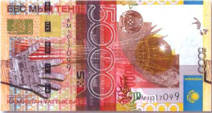
Образцы доисторического наскального искусства можно было встретить и на одной из первых банкнот этого центральноазиатского государства, а именно на 50 тенге 1993 г. (рис. 132).
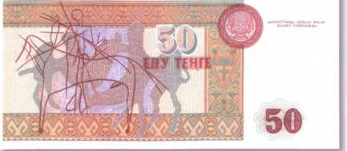
Правда, изображенные там верблюды и вооруженный всадник были взяты художниками из другого археологического музея-заповедника под открытым небом — Мангистау (полуостров Мангышлак), где подобных рисунков (там их называют наскальными поэмами) тоже не одна тысяча.
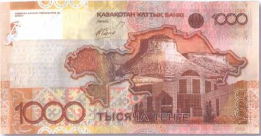
Одно из самых удивительных и загадочных мест на земле — плато Устюрт. К радости коллекционеров-бонистов, оно теперь тоже увековечено на одном из актуальных денежных знаков Казахстана — купюре в 1000 тенге 2006 г. (рис. 133). На рисунке запечатлена одна из неповторимых особенностей устюртского ландшафта — чинк [24].
Вот где мог бы поместить свой затерянный мир Артур Конан Дойл! Некоторые ученые полагают, что в далеком геологическом прошлом земли на месте Устюрта плескался древний океан. Возможно, что и появление удивительных по форме и больше нигде в мире не встречающихся в таком виде каньонов явилось следствием их формирования глубоко под водой. Устюрт по-прежнему остается наименее изученным регионом земного шара. Научные экспедиции, когда-либо организованные в те края, можно пересчитать по пальцам. А ведь история Устюрта богата на громкие события, отголоски которых периодически докатываются и до нашего времени. К примеру, там находился культовый центр зороастризма — Кой-Крылган-Кала. Там в войне с массагетами нашел свою смерть правитель ахеменидов Кир Великий. Его гробница в Пасаргадах (Иран) украшает иранскую бону в 50 риалов 1974 г. (рис. 134).
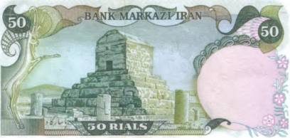
Совсем недавно археологи откопали там и древнюю столицу Хорезма — родину великого ученого Бируни. Кстати, древние зодчие, построившие на Устюрте не один крупный город, считали, что там проходит Ось мира. По Устюрту пролегал и Великий шелковый путь, вдоль которого, как известно, возникало много поселений и караван-сараев. Свидетельствами оживленной торговли и активной жизнедеятельности на Устюрте служат десятки тысяч больших и малых археологических памятников — стоянки древнего человека, многочисленные захоронения кочевников, мусульманские святыни и руины средневековых крепостей, схожих с теми, что изображены на купюрах Афганистана. Например, на вышедших из обращения бонах в 20 афганей 1979 г. и 500 афганей 1990 г. (рис. 135, 136).
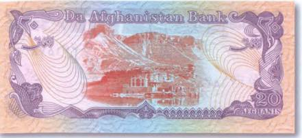
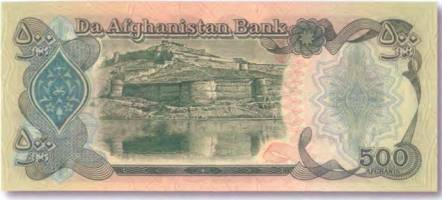
Богат и разнообразен животный мир Устюрта. И это несмотря на то, что огромные территории между Каспийским и Аральским морями кажутся непригодными для жизни. На изборожденных руслами древних рек равнинах можно встретить стайки степных антилоп, а также лис и волков. Плато Устюрта лежит на перепутье многих видов перелетных птиц. Обилие грызунов привлекает в те пустынные районы хищных степных пернатых — орлов, грифов и стервятников. До середины прошлого века на Устюрте можно было увидеть и гепарда. Впрочем, он уже давным-давно считается там вымершим.
Вид на предгорье заповедника Аксу-Джабаглы в Южно-Казахстанской области помещен на другой купюре Казахстана. Это 5000 тенге 2006 г. (рис. 137).
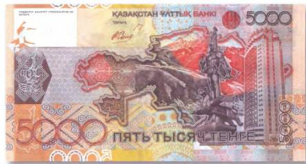
Свое название старейший заповедник (1921) Центральной Азии получил по одноименным рекам — Аксу и Джабаглы, а представленная на банкноте панорама — это живописный каньон реки Аксу. Он расположен в западных отрогах Таласского Алатау и считается одним из самых глубоких в Средней Азии. Создание заповедника было обосновано желанием сохранить многочисленные виды редких, исчезающих и эндемичных животных и растений. Как видно из слова «эндемики», многие звери, птицы и растения водятся и произрастают только на территории Аксу-Джабаглы. В общей сложности там насчитываются 1404 вида растений, 240 видов птиц и 47 видов млекопитающих, в числе которых такие крупные и редкие, как олень-марал и снежный барс. Изображение последнего можно встретить на 10 000 тенге 2003 г. (рис. 138).
Пятнистый зверь с пушистым и самым длинным в мире кошачьих хвостом величаво вышагивает там на фоне заснеженных пиков Западного Тянь-Шаня. Многие части Аксу-Джабаглы из-за своей труднодоступности по-прежнему остаются малоизученными. Поэтому не приходится удивляться, что местные легенды заселили глухие уголки заповедной земли дикими волосатыми существами — киик-адамах. Существуют многочисленные свидетельства встреч с этими загадочными обитателями. В описании киик-адамах легко угадываются черты, схожие со снежным человеком Гималаев. К сожалению, официальная наука все еще относится к подобным сообщениям крайне скептически, а потому изучением загадочных волосатых существ Аксу-Джабаглы пока на свой страх и риск занимаются энтузиасты-любители.
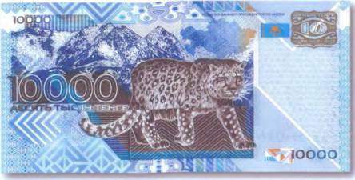
Дикие человекоподобные существа, тело которых покрыто длинными волосами, известны и в других областях Азии, например в Монголии. Необходимо сразу уточнить, что там не обитают человекообразные обезьяны, которых можно было бы выдать за загадочных прямоходящих гоминоидов. Во всяком случае в этом уверены зоологи. Но есть сведения, что в 1939 г., во время халхин-гольских событий, часовыми Монгольской народно-революционной армии были по ошибке застрелены два странных «нарушителя» границы. Когда военные как следует рассмотрели убитых, то были несказанно удивлены. Те, кого они приняли за японских разведчиков, на поверку оказались лохматыми и сильно похожими на обезьян существами. К сожалению, в руки ученых те трупы не попали. Их побыстрее закопали от греха подальше. Впрочем, старики монголы, которым успели показать неизвестных двуногих, признали в них «диких людей», якобы встречающихся в гористой местности страны. Монгольские горы запечатлены на оборотной стороне банкноты в 20 тугриков 1981 г. (рис. 139).
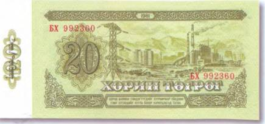
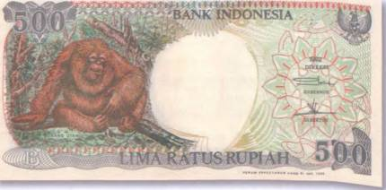
Кстати, о «снежном человеке». По мнению некоторых криптозоологов, в Гималаях может обитать какая-то неизвестная разновидность орангутанга — человекообразной обезьяны, родина которой — Индонезия. На сегодняшний день известны две разновидности этого «лесного человека» (перевод слова «орангуганг»), одна из которых — с острова Борнео — изображена на индонезийской боне в 500 рупий 1992 г. (рис. 140).
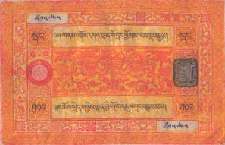
В одном из храмов Непала, всего в нескольких километрах от Намче-Базар, хранятся любопытные реликвии — скальп и мумифицированная кисть йети. За умеренную плату любому желающему обязательно покажут аляписто сработанный стеклянный ящик, в котором якобы находятся останки этого загадочного существа. Однако ученые, имевшие возможность поближе ознакомиться с сомнительными экспонатами, утверждают, что такое маловероятно. Они полагают, что скальп сшит из кусков собачьей или волчьей шкуры. А вот горцы, в отличие от корифеев науки, совсем не сомневаются в существовании «снежных людей», которых они еще называют «призраками ледников». Кстати, среди самых разных персонажей настенных росписей в горных монастырях Тибета и Непала встречаются и изображения странных лохматых прямоходящих существ. И картинкам этим не одна сотня лет!.. Искусствоведы, правда, видят в них образы сказочных демонов. Так ли это? Но самое интересное в другом! Парочка лохматых существ с монастырских фресок перекочевала и на… бумажные деньги!..
Их можно увидеть на старых бонах Тибета, номиналами в 25 и 100 срангов 40-х гг. XX в. (рис. 141).
При этом хорошо заметно, что существо справа явно женского пола, а слева — мужского.
А вот что о снежном человеке, или йети, рассказывает непальская легенда…
Задолго до того, как Гималаи были заселены людьми, в горных долинах жили целые семейства йети. Когда в горах появились первые шерпы, йети были очень удивлены их видом. Но еще больше их заинтересовали съестные запасы людей. Ночь за ночью они стали обкрадывать шерпов, что нередко приводило к конфликтам между пришельцами и коренными жителями гор. Но однажды шерпы решили раз и навсегда проучить назойливых соседей. Они прекрасно знали, что йети постоянно следят за ними и стараются им во всем подражать. Как-то раз шерпы устроили праздник. Наварили пива (чанг), наготовили еды, а закончив пировать, стали драться друг с другом. Правда, сражались они не настоящими, а деревянными ножами. Но прежде чем идти спать, люди вместо пива разлили по своим чашкам крепкое спиртное, а вместо муляжей оставили лежать холодное оружие. Как горцы и ожидали, йети спустились к ним в селение и тоже закатили пирушку. Они быстро опьянели и поубивали друг друга. В живых осталась одна-единственная семья «снежных людей». С тех пор они стараются держаться подальше от человеческого жилья и увидеть их очень трудно.